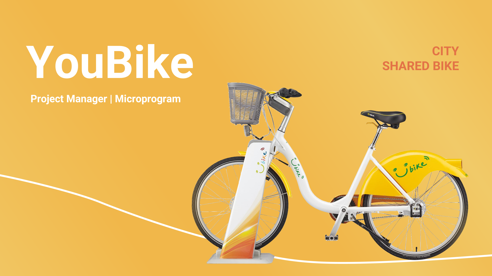
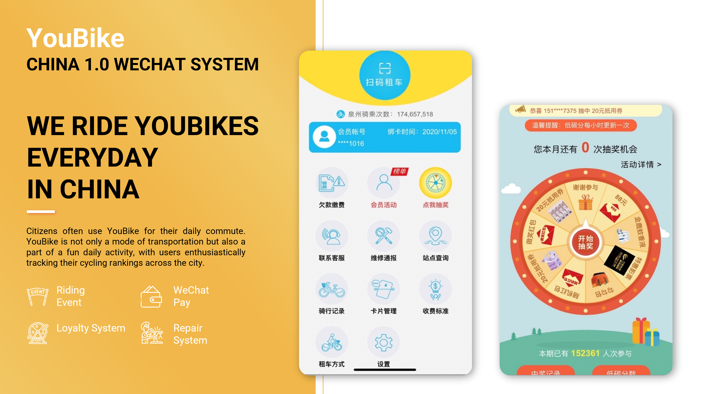
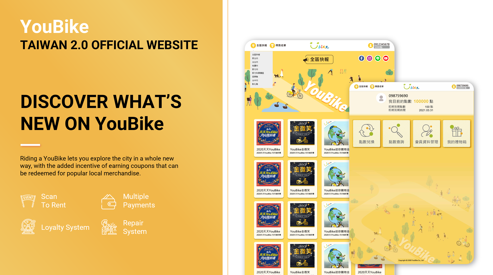
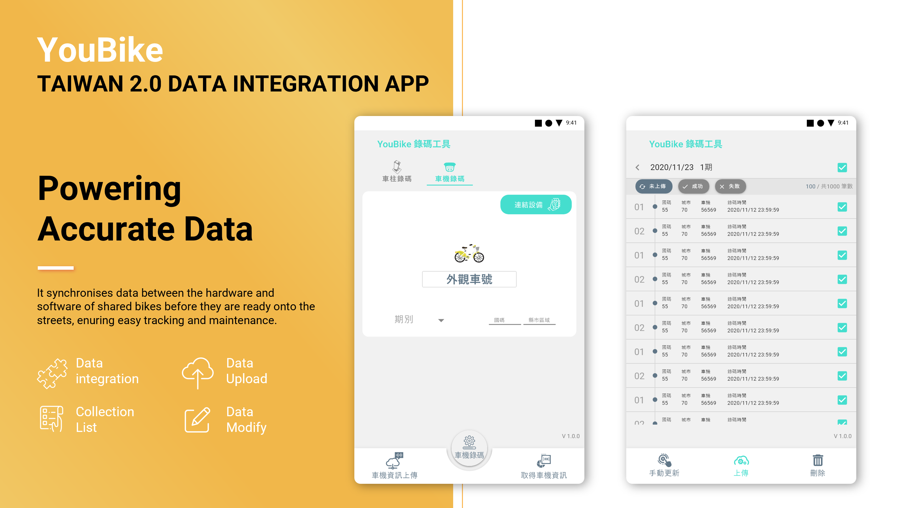

Micro Program is the core system provider for YouBike. Before the release of YouBike 2.0 in April 2021, the platform was undergoing final testing.
I led the Web WeChat App for YouBike 1.0, serving the majority of users in China, and directed the development of the marketing campaign module and data integration tools for YouBike 2.0.

With approximately 410 stations and 13,120 bikes in China, around 80% of users accessed the service via the WeChat App, making it critical to maintain stable operations.
When I took over the WeChat App, the service was in a growth stage. I led the delivery of marketing campaign modules in close collaboration with the marketing team and addressed online issues with urgent hotfixes, ensuring uninterrupted service.
I collaborated closely with non-technical stakeholders to define and refine product requirements. To ensure clarity, I asked targeted questions to uncover the underlying needs and validate alignment on proposed solutions.
When conflicts arose, I evaluated options based on technical feasibility and business impact, bringing data and user insights into the discussion. This approach enabled the team to make objective, well-informed decisions and ensured alignment across stakeholders.
As the first project I led, I transitioned the development process from Waterfall to Agile and introduced QA workflows to ensure high-quality delivery. I also created systematic documentation including workflows, sitemaps, and PRDs to align the design, engineering, and QA teams.
I conducted pre-review testing to ensure all features met acceptance criteria. Each delivery ran two to three QA testing cycles, producing measurable results to evaluate development quality and identify improvement opportunities.
The App achieved an average unit test pass rate of 99.8%, reflecting a highly stable and reliable release process.
As a team lead for six members, I fostered an open-minded and flexible culture, removing blockers and encouraging input from all team members. This approach ensured the team remained engaged, efficient, and effective in their work.

Following the successful delivery of marketing campaign modules for the WeChat App, I led a zero-to-one product initiative: the Official Website Marketing Module for YouBike 2.0. The goal was to expand user engagement through the official website while ensuring seamless integration with existing systems.
Given the high expected traffic and engagement, we identified critical technical challenges early in the project. I worked closely with engineers to define system workflows and ensure the architecture could support scalability, reliability, and integration with core services.
Key challenges included:
Through collaborative discussions and testing with the engineering team, we established solutions that ensured system stability and performance under high load.
I defined product requirements and scope in collaboration with the marketing team, delivering workflows and PRDs to guide design and development.
The project required close coordination across multiple systems:

The Hardware Data Integration Tool is a critical system used to assign IDs to bikes and docking stations and synchronise them with on-device hardware before deployment on the streets.
I took the initiative to lead the redesign and redevelopment of this tool after identifying urgent data integrity issues, which were causing operational inefficiencies, maintenance challenges, and unreliable data for analytics.
I conducted user interviews with internal operational teams to map end-to-end workflows, identify root causes, and gather feature requirements. Insights were structured into four categories: Bugs, Feature requests, Pain points and positive feedback.This structured approach ensured clear prioritisation and alignment on key problems to solve.
This project required close collaboration between software and hardware engineering teams.
I developed a strong understanding of:
This enabled me to effectively bridge communication between teams and ensure feasibility in product decisions.
Based on research insights and hands-on understanding, I redesigned the workflow with a focus on minimising disruption while improving system reliability. I defined optimised workflows and PRDs, aligned scope, timelines, and priorities with stakeholders, and led design reviews while collaborating closely with engineers throughout implementation.
After launch, I conducted post-release user evaluations and continuously monitored system performance through data analysis. As a result of these improvements, data accuracy increased from 77% to 94%, significantly enhancing operational reliability and overall data quality.